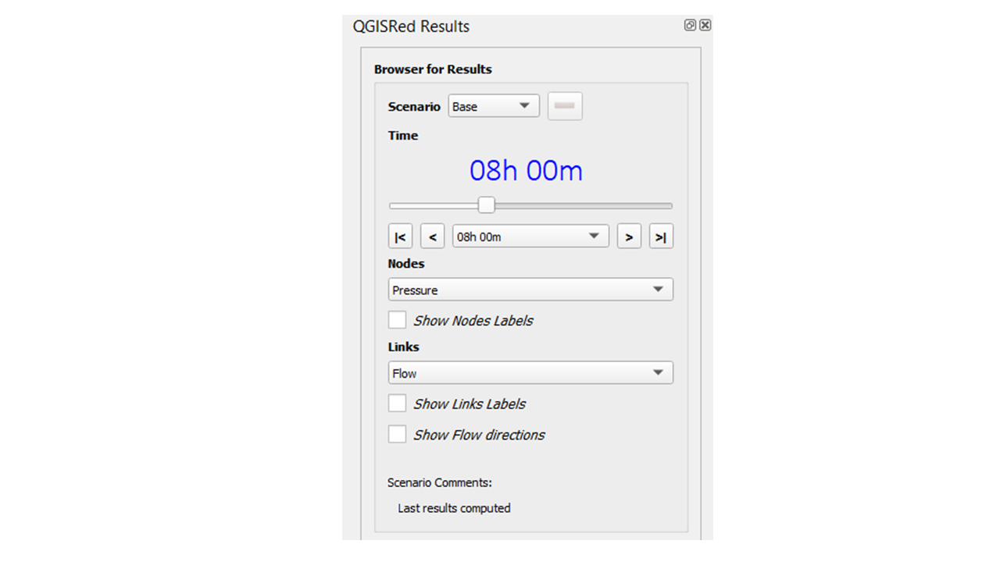
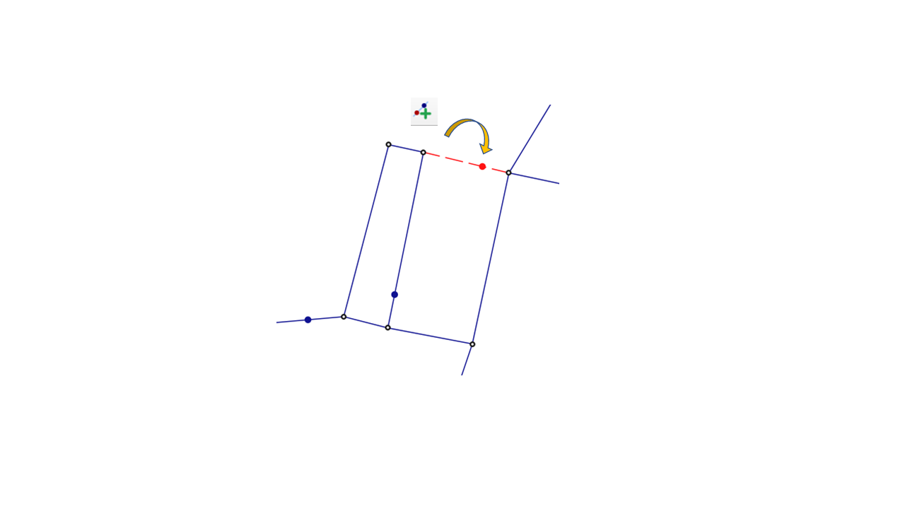

1. Graphical editing improvements
New options in the network graphical editing tools, including improved layout precision and network element management.

2. New property editor options
The property editor incorporates new navigation and editing options, facilitating work with large and complex networks.

3. Results visualisation improvements
New simulation results display options, with improved representation of element states and calculated values.
4. Bug fixes and optimisations
Bug fixes reported by the user community and general performance optimisations.